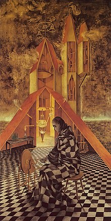

|  |
Surrealism aims to revolutionise human experience. It balances a rational vision of life with one that asserts the power of the unconscious and dreams. The movement’s artists find magic and strange beauty in the unexpected and the uncanny, the disregarded and the unconventional. At the core of their work is the willingness to challenge imposed values and norms, and a search for freedom.
My favorite artist are Leonora Carrington and Remedios Varo.
Carrington's work is identified and compared with the surrealist movement. Within the surrealist movement, there was a strong exploration of the women's body combining the mysterious forces of nature combined. During this time women artists correlated the woman figure with creative nature while using ironic stances.
Varo often painted images of women in confined spaces, achieving a sense of isolation. While Varo did not deem her own work as feminist, "her work stretches the limits of and directly challenges confabulated, patriarchal ideals of femininity". Also, Varo's work redacts male interpretation of the female body. Her works focus on female empowerment and agency. The androgynous figures characteristic of her later work also challenge gender in that the figures do not fall neatly into gender normative categories, and often could be of either sex, creating a sense of the "middle area" between the two sexes and of the gender norms placed on them. One critic states, "Because the female body, a sacred erotic artistic space for men, is transformed by [Varo] into nongendered shapes and forms, namely animals and insects, the space becomes freed from monolithic sexual interpretation".
|
|